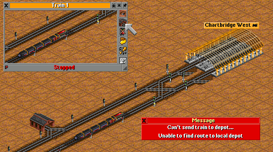

Train Servicing and Autoreplace
When you play a standard game of OpenTTD through the years, then autoreplacing comes into play. As a bit of a hidden feature, autoreplacing is influenced by some Servicing settings which can change the way how autoreplacing works a lot. In this short article I will try to show you why and how to adjust your settings for best results.

While as you well know we never use breakdowns and thus also never need train servicing, but this has one exception which is good to know.
First off, let’s see how servicing values work. When the value is in days, it is simply an interval which upon expiring will trigger trains to “want to service”.
The other option is percentage. As is written in the description, it is a percentage of maximal reliability. So if you use 50% as default and a train with 80% maximum reliability, the train will not service until reliability drops to 40%. This can be severely problematic as all trains have different max reliability and they also drop reliability slower or faster depending on what values do they have defined by the newGRF. In fact, there are engines which do not drop their reliability at all, making trains never want to service.
Most importantly you need to know that when you autoreplace trains, they will autoreplace but under condition that they do require servicing.
This means that if you try to autoreplace twice in quick succession – say a year – and trains reliability drops too slowly or the day value is too high to trigger the “want servicing”, they simply will ignore your autoreplace command and you would have to force them to depots.
All in all, I strongly recommend to you to change your settings to days instead of percentage, and the interval to some low value, 5 is lowest so I use 5.
servint_ispercent = false
servint_trains = 5
Also note that the setting is “for new trains”, therefore only the newly built trains will be influenced by this! Already built trains will not change their servicing intervals.
Depots
The second important thing to know about autoreplacing is your depot positioning. If you have just random depots somewhere, trains can often pick a wrong path in order to go to the depot and get lost as a result. That can easily mean a large scale congestion on your network. There is one way how to make trains not screw up absolutely anything, and that is by making invisible depots from the main line.
This is done by simply making depots behind terminus stations or reversers. Trains cannot be sent to depot or even search for it when there is no depot visible.

You should get this error anywhere on the main line.

Especially if you autoreplace often – with original train set or NUTS – then taking care of your depots is especially important. All you have to do is make at least one reverser or terminus station at every train’s trip.
For me the best option seems like making all primary stations terminus, or adding a reverser on their exit, while I leave the drop to be ro-ro. Do not forget that secondary trains like steel or goods also need to autoreplace! Terminus goods drop or pickup is necessary in such a case.
Happy melting!
Categories: Gameplay, OpenTTD
mfb November 18, 2012 18:12
RoRo primaries should work, too, if the depot is accessible via reversing in the station only. This way, trains have to reverse only if they need service. If you want to service your trains every trip… well, fine.
V453000 November 18, 2012 18:21
I am not sure if they would reverse just because of a service, would have to try it but I do not think they would reverse.